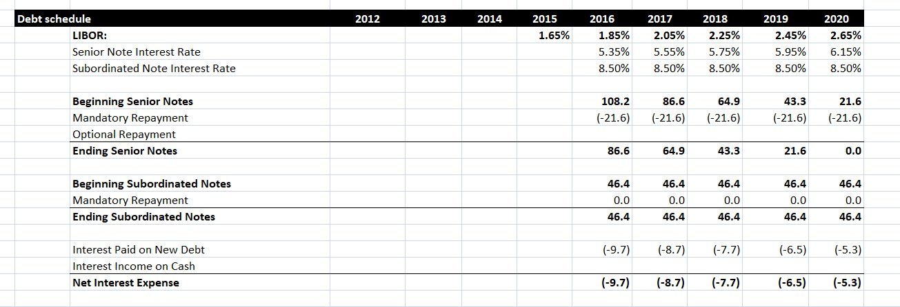
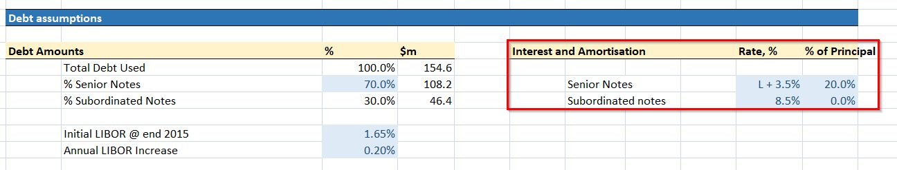
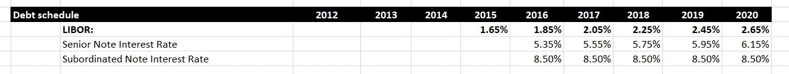
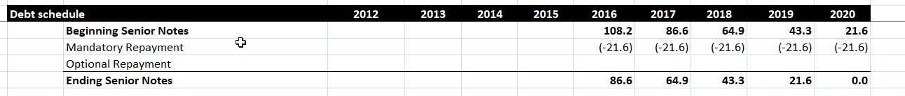
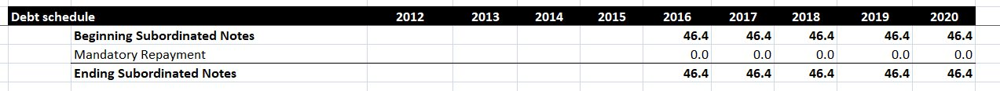
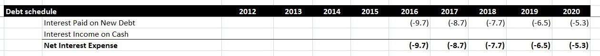

In a leveraged buyout using debt, one company purchases another using a significant amount of borrowed money to meet the cost of the acquisition. As a result, it is critically important that the company being acquired can afford to repay this debt in the future. Creating a debt schedule is therefore of vital importance when you are modeling a leveraged buyout.
A debt schedule calculates the annual principal payments and interest payments due each year after an LBO transaction. When multiple debt instruments are involved in the transaction, the debt schedule ensures that all these repayment obligations can be met.
In this post, we’ll learn how to build a debt schedule for a company called MarkerCo, which is being acquired by PrivEq, a private equity firm. Our final debt schedule will look like the image below:

Note the Types of Debt
In the image below, we have shown the debt assumptions for this particular transaction. Take note in particular of the highlighted Interest and Amortization section. We can see that there will be two types of debt used in this transaction: Senior Notes and Subordinated Notes.

The Senior Notes have a lower interest rate. In this case, the rate “L + 3.5%” means that the interest rate is LIBOR + 3.5%. However this loan also requires 20% of the principal to be repaid each year. The Subordinated Notes have a higher interest rate of 8.5%, but they have the advantage that the principal does not have to be repaid during the period of our debt schedule.
The debt assumptions also tell us the amount of debt to be raised through each instrument, and our assumptions about LIBOR, which we’ll discuss in more detail in the next section.
Project the Interest Rates
We’ll start creating our debt schedule by projecting the interest rates to be paid on each type of debt over the next five years. Note that this transaction takes place at the end of 2015, so our five year debt schedule runs from 2016 to 2020.

FIrst we must predict LIBOR over the duration of our debt schedule. At the end of 2015, LIBOR was 1.65%, and here we predict it will rise by 0.2% every year thereafter. This is a conservative prediction, which we make for the sake of prudence.
As we saw previously, the interest rate on Senior Notes is LIBOR + 3.5%. Having created LIBOR projections, we simply add 3.5% to these projections to create the projected interest rate on Senior Notes. Finally, the interest rate on subordinated debt is a constant 8.5% each year.
Calculate Principal Repayments
Having projected the interest rates, we next calculate the repayments on each of our two debt instruments. We start by calculating the principal repayments on each of the two debt instruments.
Senior Notes
The debt assumptions tell us that $108.2 million will be raised through senior debt. Therefore, this is our beginning balance in 2016. As we saw in the debt assumptions, the Senior Notes require us to repay 20% of the original principal each year, which is $21.6 million. If less than this amount remains, we repay the entire principal of the loan. As a result, we end up repaying the entire loan principal over the five years from 2016 to 2020.

Debt like this may sometimes allow for additional optional payments to be made. If the business has the cash available to make early repayments, then this can be a good idea, as it reduces the amount of the interest expense in future years. In this case, we are assuming that no optional payments are made.
Subordinated Notes
As we saw in the debt assumptions, the subordinated notes do not require us to repay any of the principal over the next five years. As a result, the principal payments on this debt are zero every year, as seen below. In this case, optional repayments are not allowed on subordinated debt, so we do not include a row for them in the model.

Calculate the Interest Expense
Having calculated the principal repayments, our next task is to determine the interest payment for each year. The interest payment for a debt instrument in a given year is the beginning amount for that debt instrument multiplied by the interest rate that applies in that year. To find the total interest payment, we add the interest on the Senior Debt to the interest on the Subordinated Debt.

In this case, the interest payment declines each year as more of the principal on the senior debt is paid off. Although the interest rate on this debt rises over time, the falling principle means the overall interest expense is reduced.
We may be able to offset the interest paid on debt by earning interest on cash that the company has available to it. However, in this instance we are assuming the business does not earn interest on their cash. Again, this is a prudent assumption to make, even if it is perhaps not realistic.
Conclusion
A debt schedule is one of the most important elements of a Leveraged Buyout model. If the debt to be added to the new company is not sustainable, then the whole transaction can be called into question. As a result, you should make sure to create a realistic debt schedule when modeling any financial transaction involving debt.